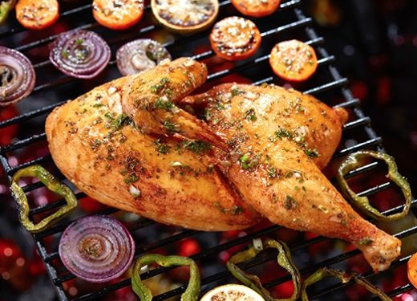
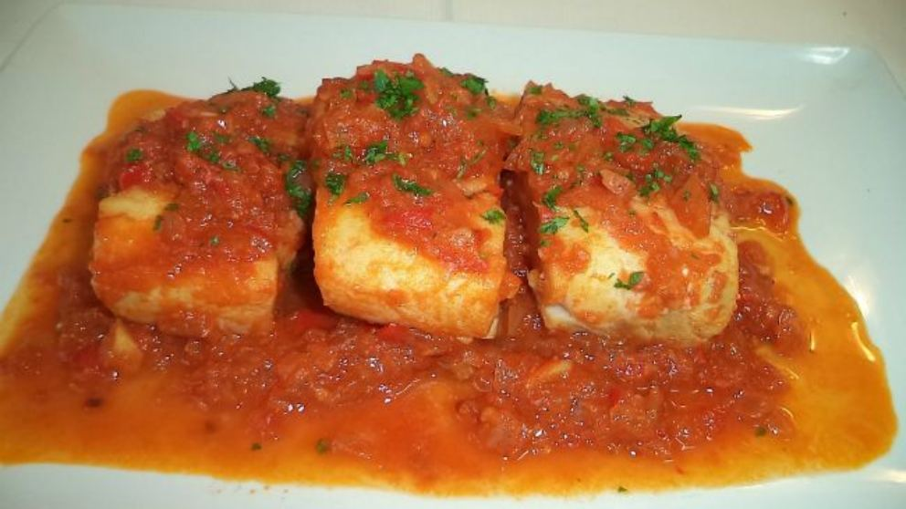
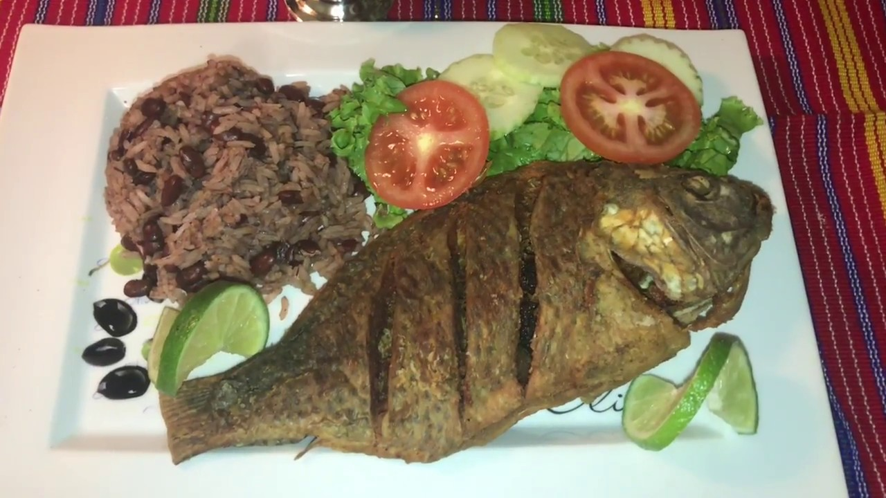
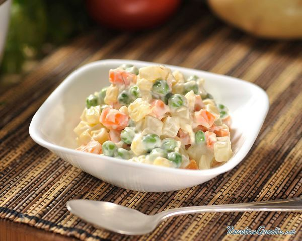

 INGREDIENTES PARA 4 PERSONAS: 1 pollo grande 1 libra de tomates 1 diente de ajo 4 cucharaditas de aceite 5 hojas de laurel sal y pimienta al gusto Es un platillo guatemalteco que se prepara en 3 pasos. 1er paso; Seleccione el costillar del pollo y aplánelo. Frote con aceite los dos lados y agregue la sal y pimienda. Distribuya las hojas de laurel y colóquelo sobre la parrilla durante 15 min. 2do paso; Prepare un pure de tomate lavando y pelando los tomates y cortándoles en trocitos. Pelar ajo en una sartén y coloque un poco de aceite. 3er paso; cuando el pollito esté listo, preséntelo sobre un plato acompañado con el puré de tomate.
 INGREDIENTES PARA 8 PERSONAS: 16 salmonetes 4 limones 1 manojo de tomillo 8 cucharadas de aceite de oliva sal y pimienta al gusto 1er paso; si los salmonetes son frescos no lo los desocupe pero si no son frescos desocupelos sin quitar el hígado. 2do paso; colocar el aceite en un plato hondo y sumergir cada pescado hasta engrasarlo bien. 3er paso;Colocar los pescados en la parrilla, sobre las brasas bien calientes. Déjelos de 6 a 8 minutos por cada lado. En el último momento colocar sobre las brasas un puñado de tomillo para que se impregne el aroma en el pescado.
 INGREDIENTES: 1 LIbra de frijol colorado 3 tazas de arroz 4 tazas de agua 1 taza de tomate picado 1 o 2 chiles pimientos verdes picados 2 cucharadas de cebolla picada 2 hojas de laurel 1 cucharadita de tomiillo Sal y pimienta al gusto 1/2 taza de leche de coco PROCEDIMIENTO Remoje el frijol un día antes, cambiele el agua y cocinelo con 4 tazas de agua nueva, cuando el frijol esté suave añade los vegetales y las hierbas, continue cocinando hasta que el frijol este completamente cocido. Si es necesario agregue más agua según se vaya consumiendo. Agregue el arroz y la leche de coco, deje cocinar a fuego muy bajo, aproximadamente 20 minutos o hasta que el arroz haya absorbido todo el líquido.
 INGREDIENTES: 1 libra de ejote 6 zanahorias 1 libra de alverjas 3 libras de papa 1 libra de pollo cocido 1 libra de mayonesa 2 cebollas picadas 1 apio grande 2 chile pimiento Sal y Pimienta al gusto PROCEDIMIENTO Se pone a cocer bien picados, zanahorias, ejotes, alverjas, después se pone a cocer la papa sola, luego todo ya todo cocido se escurre y se une la papa con la zanahorias, ejotes y alverjas. Se agrega el chile, cebolla y apio picados, se revuelve con mayonesa y agregando el pollo cocido previamente y desmenuzado, sal y pimienta al gusto y se sirve frío.